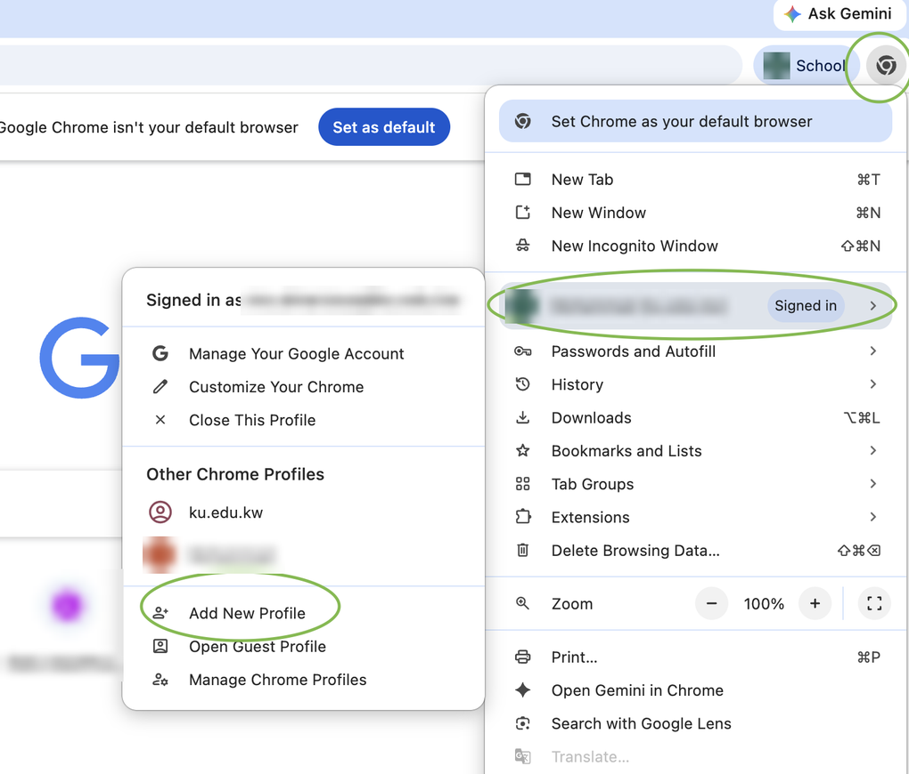
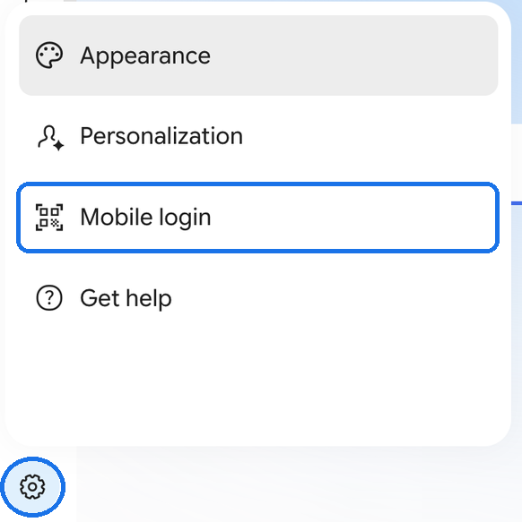

Start here
- Sign in at ai.ku.edu.kw
Use your KU account (your University email). Not a personal Gmail.
- Avoid "Access denied"
Sign out of any personal Gmail in your browser first, or create a separate browser profile just for your KU account. How to create a profile
- Use it on your iPhone
Install "Google Gemini Enterprise" from the App Store, then sign in by scanning a QR code from the web version. Mobile app steps
- Need help?
Use the request form: bit.ly/ku-ge-rs
Getting in
Where do I go?
Open ai.ku.edu.kw. Always enter through this address.
Which account do I sign in with?
Your KU account - the same one you use for University email. Not a personal Gmail account.
The most common problem: "Access denied"
Why do I see "Access denied" or the wrong account?
Your browser is signed in to more than one Google account (for example a personal Gmail and your KU account). It picks the wrong one.
Fix: create a separate browser profile used only for your KU account. Open ai.ku.edu.kw from that profile.

Google Chrome - 3 steps
- Click your profile icon at the top right of Chrome.
- Choose "Add New Profile" (or "Add Chrome profile"), then sign in with your KU account.
- In that new window, open ai.ku.edu.kw.
Official guide: Google Chrome Help - Manage Chrome with multiple profiles
Safari (Mac) - 3 steps
- Choose Safari > Settings, then click Profiles.
- Create a new profile (for example "KU").
- Open a window in that profile, sign in with your KU account, and open ai.ku.edu.kw.
Official guide: Apple Support - Create distinct browsing profiles in Safari on Mac
Microsoft Edge - 3 steps
- Select your profile picture at the top of Edge.
- Choose "Add profile" / "Set up new profile", and name it "KU".
- In that profile window, open ai.ku.edu.kw and sign in with your KU account.
Official guide: Microsoft Support - Sign in and create multiple profiles in Microsoft Edge
Mobile app
Gemini Enterprise is now on the App Store for iOS.
Get "Google Gemini Enterprise" on the App StoreTo sign in on the app, scan a QR code from the web version:
- Install the app on your iPhone.
- On a computer, open ai.ku.edu.kw and sign in.
- Open Settings (the gear icon, bottom-left), then choose "Mobile login". A QR code appears.
- Scan the QR code with the app.

Using it well
Which tool for what?
Chat
Drafting, editing, summarising and translation.
Deep Research
Multi-step research on the web that produces a report with citations. Open and check the cited sources.
NotebookLM
Answers grounded in, and cited to, the sources you add (papers, notes, slides). Good when you have many sources. Still verify what it says.
Source: Google Cloud - Gemini Notebook Enterprise (NotebookLM) overview
Agents
Pre-configured assistants for a specific task. Pick one from the agent list in the portal.
Source: Google Cloud - Agents overview
Which model for what?
Gemini 4 Hydrogen — Fast & Everyday Tasks
Built for speed, responsiveness, and everyday work without heavy compute overhead.
- Learners: Study guides, concept explanations, flashcards, quick Q&A, and brainstorming.
- Researchers & Faculty: Summarizing articles, drafting outlines, formatting data, and routine script edits.
- Admin Staff: Drafting everyday emails, meeting summaries, translations, and quick document formatting.
- Developers & IT: Everyday coding, quick fixes, and routine or parallel automation tasks.
Gemini 4 Argon — Balanced Reasoning & Long Documents
Strong multi-step reasoning across large documents while keeping a balanced footprint.
- Learners: Breaking down dense textbooks, comparing theories, and working through multi-step problem sets.
- Researchers & Faculty: Literature synthesis across multiple papers, methodology critique, and grant or proposal structuring.
- Admin Staff: Reviewing long policies, bylaws, RFPs, and multi-document committee packets.
- Developers & IT: Complex problem-solving, system analysis, and technical documentation.
Gemini 4 Neon — High-Performance Coding & Analytical Work
Tuned for demanding technical, analytical, and multi-step agentic workflows.
- Learners: Advanced capstone projects, coding assignments, and data-science labs.
- Researchers & Faculty: Writing and debugging research simulations, statistical/ML pipelines, and custom analysis tools.
- Admin Staff: Complex spreadsheet formulas, data reconciliation workflows, and automated reporting scripts.
- Developers & IT: Multi-step software engineering, complex debugging, and end-to-end agentic development.
Gemini 4 Carbon — Maximum Depth & High-Stakes Review
Allocates maximum thinking depth to test hypotheses, catch subtle edge cases, and resolve hard blockers.
- Learners: Deep thesis-level problem-solving and rigorous verification of complex proofs or designs.
- Researchers & Faculty: Deep peer-review critique, theoretical model validation, and catching subtle flaws in arguments or code.
- Admin Staff: High-stakes compliance reviews, sensitive correspondence, and cross-checking critical decisions for contradictions.
- Developers & IT: System architecture, large-scale refactoring, security audits, and high-risk production changes.
Source: Google AI — Gemini Models
Dos and don'ts
Quick list
Do
- Use your own browser profile for your KU account, and enter via ai.ku.edu.kw.
- Use connectors and @mentions to reach your files, instead of downloading and re-uploading them (about connectors).
- Use NotebookLM when you work with many sources.
- Check citations, figures and calculations.
Don't
- Upload restricted data: student records, exam papers, personal data.
- Use it to decide grades, promotions or evaluations.
- Paste large confidential datasets into chat.
Notices
For students: what should I know before I use it?
- Check what it tells you. It can be wrong, and it can invent facts and references.
- Your work stays within the University's environment and is not used to train public AI models. Still, keep passwords and personal, medical or financial details out.
- Keep your own copy of your files. It is an assistant, not storage.
- Academic integrity rules apply. Do not submit its output as your own work unless your instructor allows it.
- Tell your instructor if something goes wrong.
- Using it is your choice.
See the KU Generative AI Policy (PDF).
For faculty: what should I know before I use it?
- Check what it produces before you rely on it.
- Your data stays yours. It stays within KU's environment and is not used to train public models.
- Keep your own copy of any files you connect.
- Share the student notice with your students before using it in class.
- Report problems via bit.ly/ku-ge-rs.
- Participation is voluntary.
For faculty: where are the workshop slides?
Slides from the faculty introduction workshop held on 23 September 2026:
Help and policy
Where do I get help or report a problem?
Use the request form: bit.ly/ku-ge-rs.
Which policy applies?
The Kuwait University Generative AI Policy: English (PDF) - Arabic (PDF).